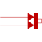

FixedHeatFlowFixed heat flow boundary condition |

|
Information
This information is part of the Modelica Standard Library maintained by the Modelica Association.
This model allows a specified amount of heat flow rate to be "injected" into a thermal system at a given port. The constant amount of heat flow rate Q_flow is given as a parameter. The heat flows into the component to which the component FixedHeatFlow is connected, if parameter Q_flow is positive.
If parameter alpha is <> 0, the heat flow is multiplied by (1 + alpha*(port.T - T_ref)) in order to simulate temperature dependent losses (which are given with respect to reference temperature T_ref).
Parameters (3)
| Q_flow |
Value: Type: HeatFlowRate (W) Description: Fixed heat flow rate at port |
|---|---|
| T_ref |
Value: 293.15 Type: Temperature (K) Description: Reference temperature |
| alpha |
Value: 0 Type: LinearTemperatureCoefficient (¹/K) Description: Temperature coefficient of heat flow rate |
Connectors (1)
| port |
Type: HeatPort_b |
|---|
Used in Examples (3)
|
Modelica.Fluid.Examples Simple model of a heating system |
|
|
Modelica.Fluid.Examples Multi-way connections of pipes and incompressible medium model |
|
|
Modelica.Fluid.Examples Multi-way connections of pipes with dynamic momentum balance, pressure wave and flow reversal |